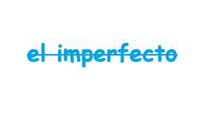

El pretérito imperfecto se usa para hablar de acciones habituales o continuas en el pasado. También describe personas, lugares, emociones o situaciones sin indicar su final. Sirve como “escenario” del pasado, en contraste con acciones puntuales.
A/VERBOS REGULARES :
pronombres personales
yo
tu
el/ella/Usted
nosotros
vosotros
ellos/ellas/usted
Mir"ar"()
Mir
aba
Mir
abas
Mir
aba
Mir
abamos
Mir
abais
Mir
aban
Com"er"()
Com
ia
Com
ias
Com
ia
Com
iamos
Com
iais
Com
ian
viv"ir"()
viv
ia
viv
ias
viv
ia
viv
iamos
viv
iais
viv
ian
B /VERBOS REGULARES :
pronombres personales
yo
tu
el/ella/Usted
nosotros
vosotros
ellos/ellas/usted
SER()
era
eras
era
eramos
erais
eran
IR()
iba
ibas
iba
ibamos
ibais
iban
VER()
veia
veias
veia
veiamos
veiais
veian
LOS MARCADORES TEMPORALES :
Antes
DE nino,de pequeno,a los 10 anos
Cuando era nino
en aquella epoca
En aquellos anos
En aqueel tiempo